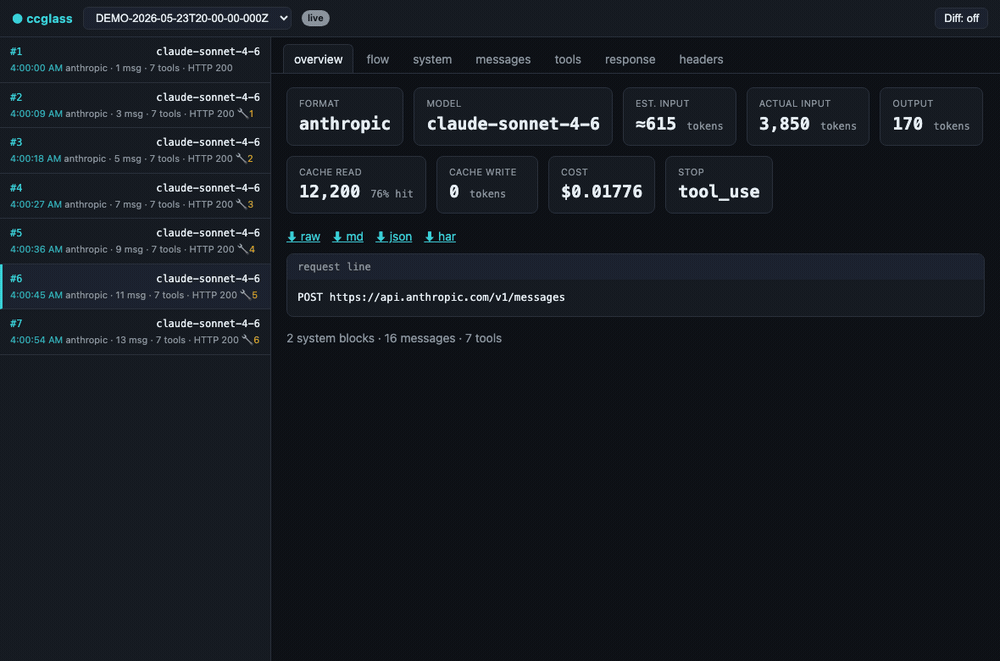

A lightweight local reverse-proxy + web dashboard for Claude Code, Codex, DeepSeek-TUI, Reasonix, Kimi, OpenCode, Ollama, OpenRouter, and more.

Claude Code, Codex, and friends are Node/native apps that completely bypass HTTP_PROXY and HTTPS_PROXY — so Charles, mitmproxy, and fetch-patching tools simply never see the traffic.
ccglass sidesteps all of that. The client does HTTPS to the real API itself. You only intercept the plain HTTP hop to localhost. No CA certificates to install, no TLS pinning to fight, no install root certs in every new terminal.
Set the agent's base-URL env var to point at the local proxy. The agent does TLS to the real API; you watch the plaintext request on localhost.
Full system prompts. Every tool schema. Message history. Token, cache, and cost numbers. Turn-to-turn diffs. All of it, in real time.
npm install -g ccglass puts the binary in your PATH. No runtime dependencies for the core proxy. The optional MCP self-inspection feature pulls in @modelcontextprotocol/sdk and zod.
ccglass claude starts a local proxy, sets ANTHROPIC_BASE_URL to point at it, then launches Claude Code. Pick from the interactive menu or name the provider directly.
The local dashboard opens in your browser. Every API request the agent makes appears in real time — system prompt, tools, messages, tokens, cost.
Work in your coding agent exactly as you normally would. ccglass is entirely transparent — the proxy forwards all traffic faithfully; nothing is modified, nothing is blocked. Ctrl-C to stop.
Built-in support for every major AI coding agent and model provider. Custom providers via the generic ccglass run escape hatch.
| Command | Wraps | Env var set | Format |
|---|---|---|---|
| ccglass claude | Claude Code | ANTHROPIC_BASE_URL | Anthropic |
| ccglass codex | Codex (OpenAI) | OPENAI_BASE_URL | OpenAI |
| ccglass deepseek | DeepSeek-TUI dispatcher | DEEPSEEK_BASE_URL | OpenAI |
| ccglass deepseek-tui | DeepSeek-TUI runtime | DEEPSEEK_BASE_URL | OpenAI |
| ccglass reasonix | Reasonix | DEEPSEEK_BASE_URL | OpenAI |
| ccglass kimi | Claude Code → Moonshot | ANTHROPIC_BASE_URL | Anthropic |
| ccglass opencode | OpenCode | OPENAI_BASE_URL | OpenAI |
| ccglass ollama | Any Ollama-backed client | OPENAI_BASE_URL | Local |
| ccglass lmstudio | Any LM Studio-backed client | OPENAI_BASE_URL | Local |
| ccglass openrouter | Any OpenRouter client | OPENAI_BASE_URL | OpenAI |
| ccglass bedrock | Claude Code → AWS Bedrock | ANTHROPIC_BEDROCK_BASE_URL | Anthropic |
| ccglass vertex | Claude Code → Google Vertex | ANTHROPIC_BASE_URL | Anthropic |
| ccglass glm | Any GLM/Zhipu client | OPENAI_BASE_URL | OpenAI |
| ccglass run --provider <p> -- <cmd> | Any client with a base-URL env var | per provider / --env-var | OpenAI |
IDE extensions that let you configure a custom API base URL can be inspected with ccglass proxy — it starts the proxy and dashboard without spawning any child process.